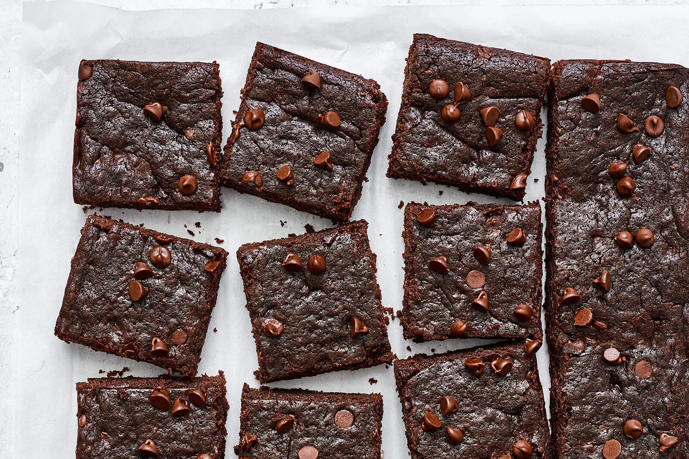
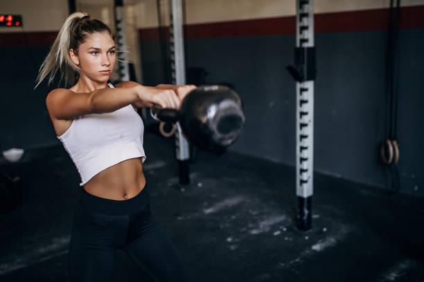

The Fitness Foodie Blog
RECENT POSTS
Sweet Potato Brownies - Healthy & Delicious!
Post by Zeljka Zujic, Oct 30, 2024.
Food Recipes
Sweet potato brownies are the perfect combination of health and indulgence. Made with nutrient-packed sweet potatoes, these brownies are rich, fudgy, and loaded with antioxidants. They're gluten-free, versatile, and perfect for guilt-free snacking. Sweet potatoes are rich in vitamins A and C, and fiber, making these brownies both nutritious and satisfying. They're naturally sweet, which means you can use less refined sugar while still achieving a decadent flavor. Best of all, these brownies are simple to make, requiring just a few wholesome ingredients and minimal preparation time—a perfect treat for busy, health-conscious individuals. Whether you're on a fitness journey or simply craving a healthy dessert, these brownies are the way to go.

RECENT POSTS
Pre-Workout Nutrition | Fuel Your Workout The Right Way
Post by Zeljka Zujic, Oct 16, 2024.
Nutrition
Proper pre-workout nutrition is essential for maximizing performance and preventing fatigue. Eating the right foods before exercise provides your body with the energy needed for intense physical activity and helps maintain stamina throughout the session. Additionally, pre-workout meals can improve focus, reduce the risk of muscle breakdown, and enhance post-workout recovery. Timing and food choices are crucial to ensure your body is fueled without feeling heavy or sluggish. Fueling your body the right way before a workout can make all the difference. Aim for a balanced snack that combines carbohydrates for energy and protein to support muscle repair. Examples include a banana with peanut butter, a smoothie with oats and whey protein, or a handful of almonds with a small apple. Stay hydrated, and remember to eat 30-90 minutes before exercise for optimal performance.
Leave a Comment:
2 Comments:
Anna.92 Nov 11, 2024, 9:12 PM
So glad I found your blog! I am a huge foodie myself and sometimes it can be difficult to find food that can satisfy both my sweet tooth and nutritional needs. But now I know where to look! 😁
Sofia.S Nov 1, 2024, 8:25 PM
I didn't know cooking could be so easy and fun! I am looking forward to new recipies. So far I tried them all!
1 Comment:

Mermaid22 Nov 6, 2024, 11:28 PM
Me too! 😅